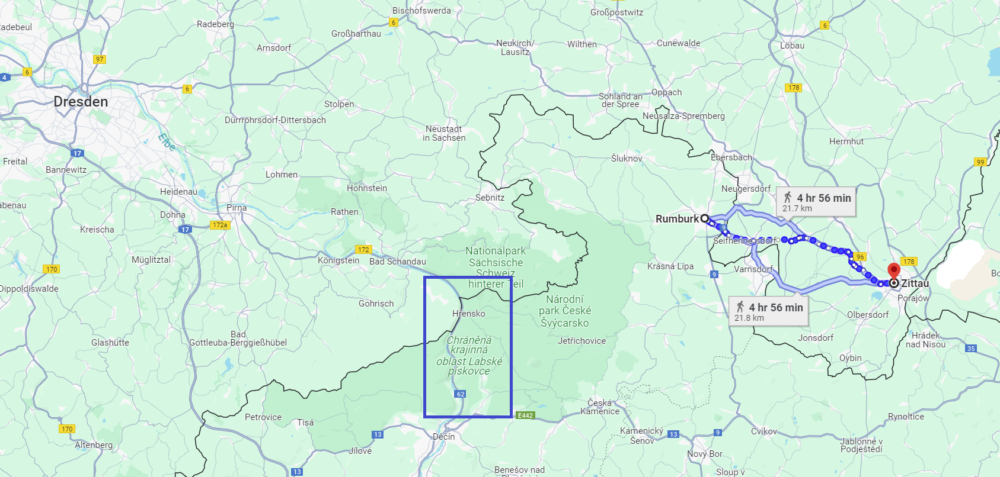
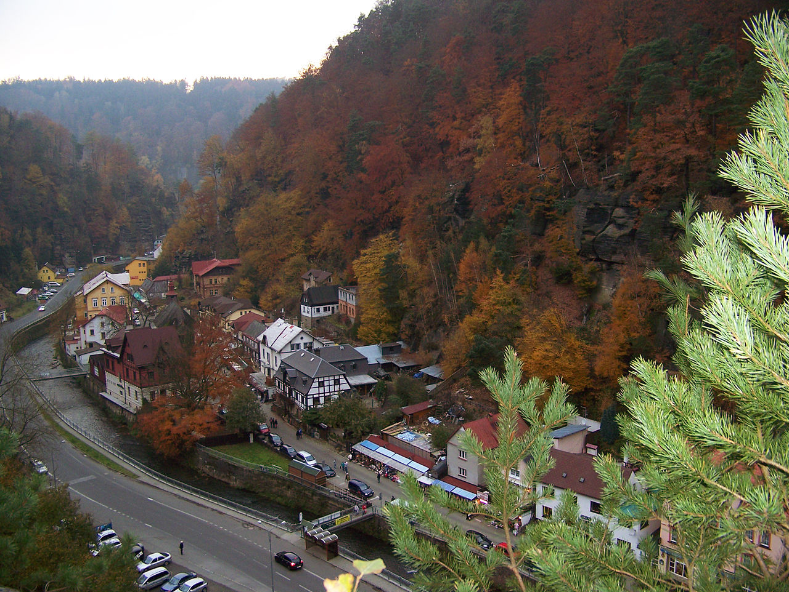
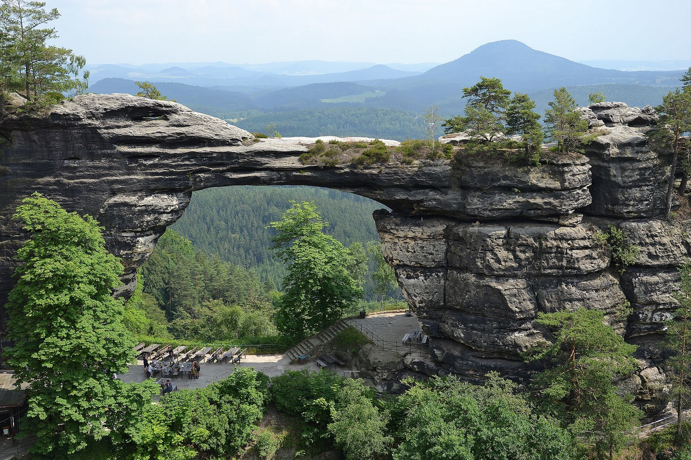
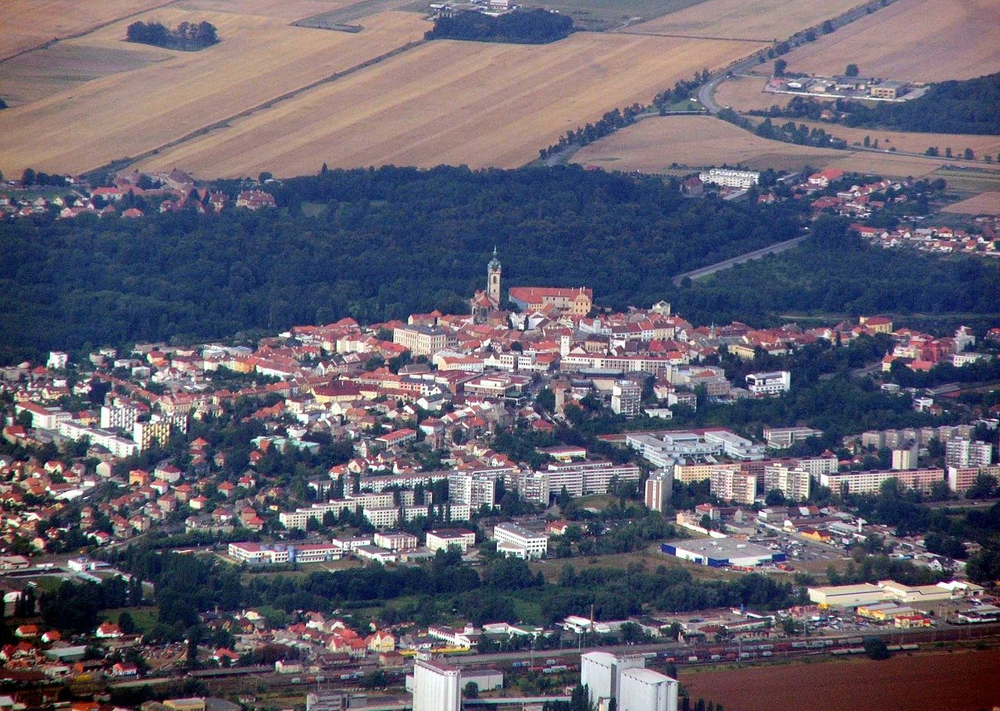
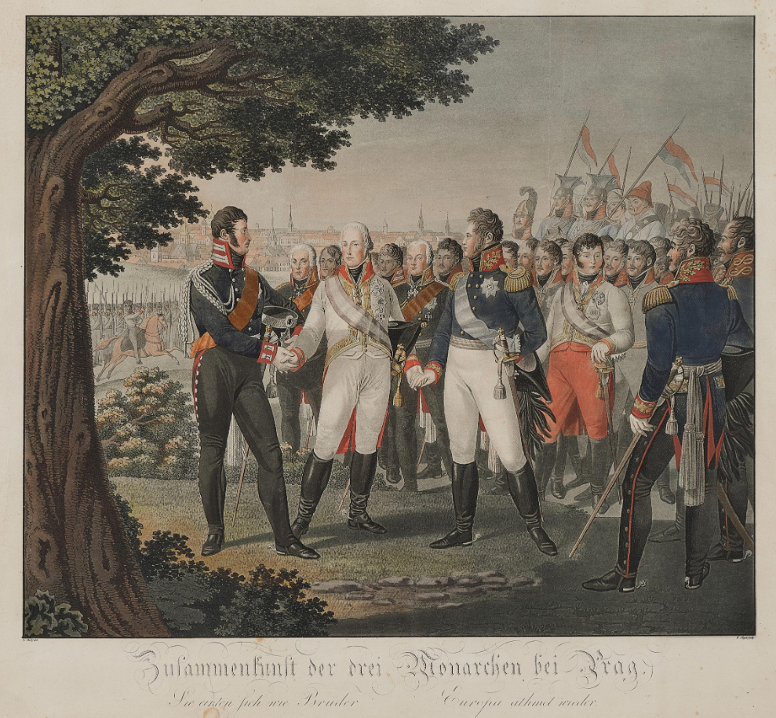
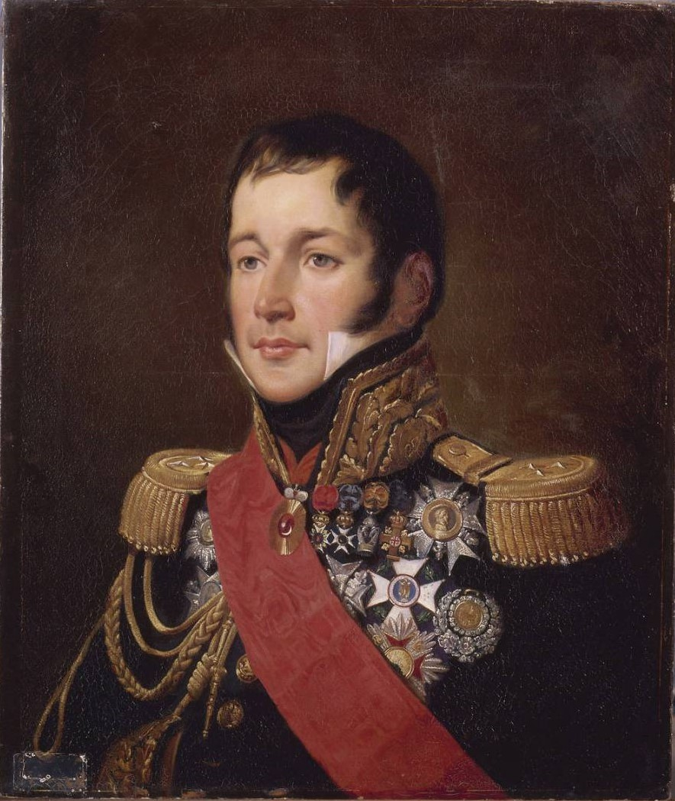
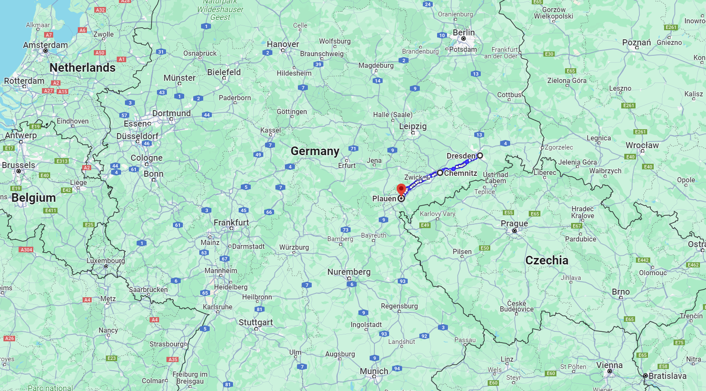
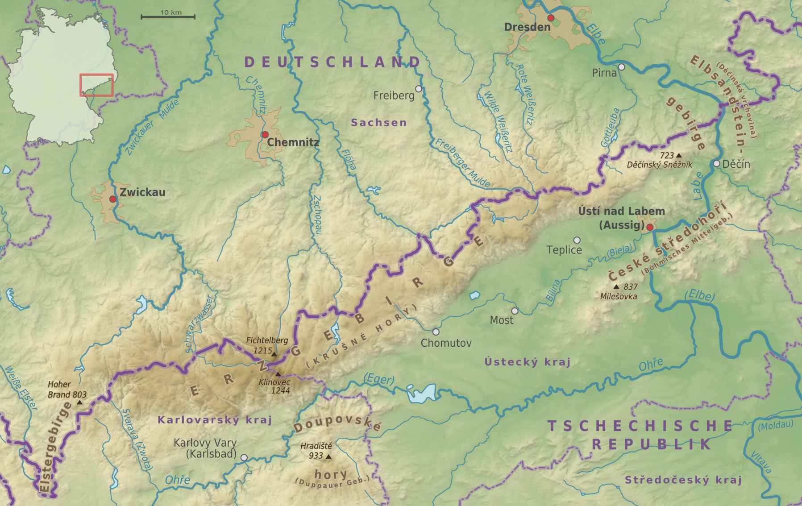
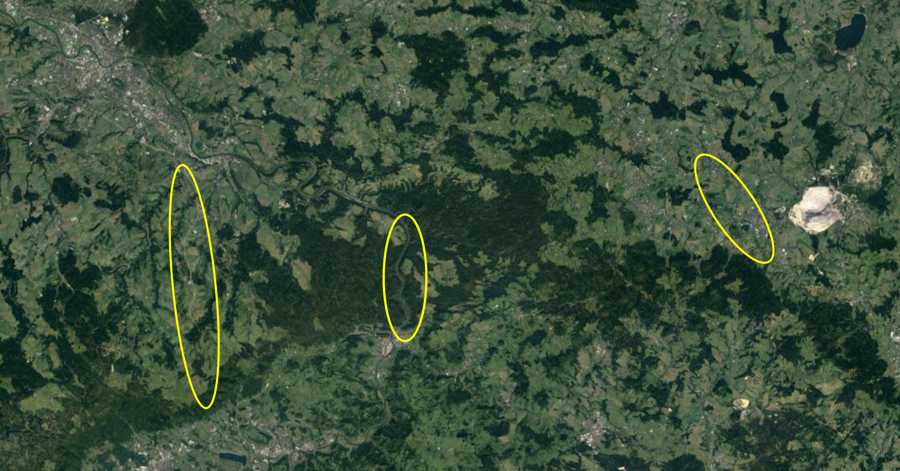
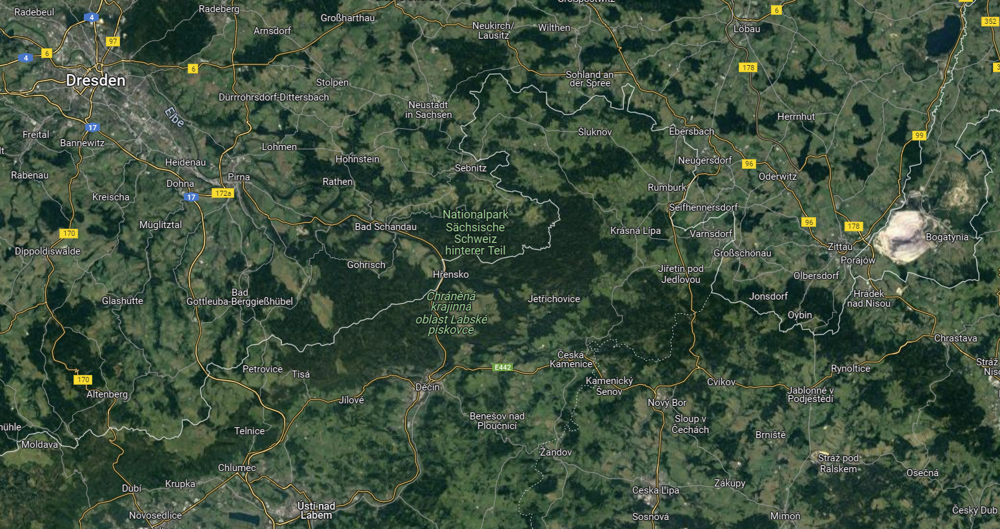

드레스덴을 향하여 (9) - 자만은 구멍을 낳고
게시: 2024-02-05T06:30:31+09:00
나폴레옹이 블뤼허의 슐레지엔 방면군을 먼저 제거하기로 마음 먹고 동쪽으로의 전격전을 기획하면서, 그는 당연히 남쪽 보헤미아 방면군이 자신이 자리를 비운 드레스덴 또는 그 배후지인 라이프치히를 공격할 것이라고 예상했습니다. 따라서 지난 편에서 보셨듯이, 그는 이중삼중으로 드레스덴의 방어를 든든히 준비했습니다. 말이 쉬워서 이중방어 삼중방어이지, 그저 무작정 대규모 병력을 드레스덴에 배치하고 참호를 파고 요새를 쌓을 수는 없는 노릇이었습니다. 어차피 방어에 배치할 병력은 한정되어 있고 그나마 2선급 부대가 대부분이었으니까요. 따라서 방어를 준비하는 입장에서는 적이 어디로 침투해올 것인지 예상하고 그 길목을 틀어막이야 했습니다. 다행히 드레스덴을 수도로 하는 작센 왕국과 보헤미아 사이에는 일련의 산맥이 동서로 걸쳐져 있었으므로, 10만 규모의 대군이 통과할 길목은 그다지 많지 않았습니다. 나폴레옹의 이중 삼중 방어란 바로 그 길목을 막는 것이었습니다. 나폴레옹이 생각한 길목은 크게 두 곳으로, 엘베 사암 산맥(Elbsandsteingebirge, 엘프잔트슈타인비어거)과 거인 산맥 (Riesengebirge, 리징거비어거) 사이의 계곡인 지타우(Zittau)와, 더 서쪽에 있는 계곡인 럼부르크(Rumburg)였고, 거기에 빅토로의 포니아토프스키 등의 군단들을 배치해놓았습니다. 하지만 여기서 의문점이 하나 듭니다. 드레스덴은 분명히 엘베강을 끼고 있는 도시이고, 엘베강은 그런 산맥을 뚫고 남쪽 보헤미아로부터 흘러와 발트해로 빠져나가는 큰 강이었습니다. 손자병법에도 군대가 산악 지대를 이동할 때는 물이 흐르는 계곡을 따라 움직이라고 했습니다. 상식적으로 강이 흐르는 곳이 가장 낮은 곳이고, 길이 있다는 뜻이니까요. 그런데 왜 나폴레옹은 엘베강이 작센-보헤미아의 국경 산맥을 관통하는 곳을 방비할 생각을 하지 않았을까요?

(저 지도에서 파란 사각형으로 표시된 곳이 엘베강이 산맥을 꿰뚫는 계곡, 흐렌스코 마을 일대입니다. 그 오른쪽에는 럼부르크와 지타우 사이의 거리가 표시되어 있습니다. 지타우로부터 럼부르크의 거리가 22km 정도니까, 지타우에서 흐렌코까지는 약 45km 정도가 됩니다. 평지를 걷는다고 하면 약 이틀 정도의 행군거리입니다.)
우리가 상식으로 아는 것은 당연히 나폴레옹도 알고 있었습니다. 그리고 엘베강이 산맥을 뚫는 계곡은 영화 속에나 나올 것 같은 진짜 험준한 곳으로서, 흐렌스코(Hřensko)라는 마을이 있는 이 계곡을 통해 대군이 이동한다는 것은 상상할 수 없는 일이었습니다. 이런 곳이라면 정말 군단이 아니라 1개 연대만 배치해 놓아도 10만 대군을 막을 수 있을테니까요.

(현재의 흐렌스코 마을과, 거기를 흐르는 엘베강의 모습입니다. 1813년 당시에는 저런 강변 도로도 없었을 것입니다. 엘베강도 이렇게 상류에서는 상당히 좁네요.)

(이 멋진 절경이 있는 곳은 흐렌스코 마을 근처에 있는 프라비치저(Pravčice) 관문, 독일어로는 프레비슈토르(Prebischtor) 관문이라고 하는 곳입니다. 그 일대의 험준함을 잘 보여줍니다. 이렇게 멋진 곳은 관광지로 인기있을 것 같은데, 첫 여관이 세워진 것도 1823년이라고 하니까 1813년 정도에는 진짜 두메산골이었던 것입니다.) 이야기가 재미있어지려면 슈바르첸베르크가 이끄는 보헤미아 방면군이 그런 험한 지형에도 불구하고 흐렌스코 계곡을 기어이 강행돌파하는 모습이 나와야 하는데, 실제로는 슈바르첸베르크 및 그의 장군들도 나폴레옹처럼 그 일대 지형을 잘 알고 있었으므로 그 계곡을 통과한다는 생각은 전혀 하지 않았습니다. 그러나 보헤미아 방면군의 수뇌부는 나폴레옹과는 다른 방향으로 생각하다가 나폴레옹이 예상하지 못한 방향으로 북진하게 됩니다. 1813년 하계 작전을 시작하면서 나폴레옹은 예전과는 달리 '일단 연합군이 어떻게 나오는지 보고 움직이겠다'라고 작심한 것은 그의 과거 작전들을 생각하면 꽤 예외적인 결정이었습니다. 하지만 이것이 나폴레옹의 기가 꺾였다거나 하는 것은 아니고, 적군이 크게 북, 동, 남의 3개 방면군으로 흩어져 있었고 나폴레옹은 내선 이동의 장점을 살릴 수 있는 위치에 있었기 때문에 그런 결정을 내린 것이었습니다. 전투 재개가 선언된 8월 17일, 보헤미아의 멜닉(Melnik)에는 연합국의 군주들 3명을 포함한 보헤미아 방면군 수뇌진들이 모두 모였습니다다만, 실은 이들도 이제 뭘 어떻게 해야할지 막막한 것은 나폴레옹보다 더 하면 더 했지 덜 하지는 않았습니다. 트라헨베르크 의정서에 따르면 그들은 일단 나폴레옹을 향해 전진을 해야 했습니다. 그러나 말이 쉽지 상대는 나폴레옹이었습니다. 그 희대의 영웅을 향해 돌격하는 것은 신중에 신중을 기해야 하는 일이었습니다.

(멜닉은 프라하 북쪽 25km 정도에 위치한 인구 2만 정도의 도시로서, 르네상스 시대 이후의 온갖 역사적 건물들이 법으로 잘 보존된 아름다운 도시입니다. 체코는 포도주-맥주-보드카의 3파전이 팽팽한 유럽에서 이 3대 주종이 골고루 유명한 독특한 나라인데, 멜닉은 그 중에서도 포도주로 유명한 도시라고 합니다.)

(8월 프라하 인근에서 만난 세 연합국 군주들입니다. 왼쪽부터 프로이센의 프리드리히 빌헬름 3세, 오스트리아의 프란츠 1세, 러시아의 알렉산드르 1세입니다.) 게다가, 트라헨베르크 의정서 작성시부터 약간 엇박자를 내던 오스트리아군의 주요 인물 라데츠키 장군은 여전히 나폴레옹을 향한 선제 공격은 반대하는 입장이었습니다. 원래 휴전 기간 내내 모아진 의견은 '나폴레옹은 반드시 보헤미아로 먼저 쳐들어올 것이다'라는 것이었는데, 라데츠키는 그렇게 나폴레옹이 쳐들어오는 것을 기다렸다가 그 뒤를 따라올 북부 방면군과 슐레지엔 방면군과 합세하여 나폴레옹을 협격하는 것이 유리하다고 주장했습니다. 또한 라데츠키는 구태여 먼저 나폴레옹을 공격한다면 나폴레옹은 지리적인 이점, 즉 내선이동의 유리함을 십분 살려서 3개 방면군을 하나하나 박살낼 것이라고 주장했습니다. 이는 꽤 그럴싸한 이야기였습니다. 그런데 라데츠키의 의견을 뒤집을 수 있는 소식이 날아들었습니다. 8월 14일 그랑다르메에서 탈영하여 연합군 진영으로 망명해온 조미니가 '나폴레옹은 먼저 베르나도트의 북부 방면군을 치고 베를린을 점령할 계획이다'라는 정보를 가지고 온 것이었습니다. 실제로 우디노(Nicolas Charles Oudinot) 원수는 나폴레옹으로부터 베를린을 함락시키라는 명령을 받고 3개 군단, 즉 베르트랑의 제4군단과 귈미노(Armand Charles Guilleminot)의 제12군단, 그리고 레이니에(Jean Reynier)의 제7군단을 북진시키고 있었는데, 그 움직임은 연합군의 정찰병들에 의해 슈바르첸베르크, 블뤼허와 함께, 경악한 베르나도트에게도 전달되고 있었습니다.

(당시 제12군단장이던 귈미노(Armand Charles Guilleminot) 장군입니다. 나폴레옹보다 5세 연하였던 그는 대혁명이 발생한 1789년 15세의 나이로 입대하여 군 생활을 시작했습니다. 3년만에 소위로 승진한 귈미노는 뒤무리에 장군 밑에서 복무하다 뒤무리에가 연합군에 망명하면서 동조자로 의심받아 투옥되기도 했고, 나중에는 또 하필 피슈그뤼 및 모로와 함께 일하면서 본의 아니게 나폴레옹의 눈 밖에 났습니다. 이후 한직이라고 할 수 있는 공병 장교로 일하며 지도 제작 업무를 주로 하던 그는 1806년 제4차 대불동맹전쟁이 발발하면서 베르티에 밑에서 지도 관련 참모 업무를 하며 다시 메이저 무대에 발을 들였습니다. 전공이 그렇다보니 그는 주요 전투에서 큰 공을 세우지는 못했는데, 실은 이번에 귈미노가 제12군단을 맡은 것이 그가 거의 처음 맡은 군단장직이었고, 전투 부대를 지휘하는 것도 거의 처음이었습니다. 제12군단은 당시 사실상 거의 전체가 신병으로 이루어져 있어서 비록 병력은 2만으로 꽤 큰 편이었지만 실제 전투력은 매우 의심스러웠고, 실제로도 별 활약을 하지는 못했습니다.) 하지만 바로 다음 날 나폴레옹의 주공 방향은 베를린이 아니라 슐레지엔이라는 것이 밝혀졌습니다. 코삭 등 기병 자원은 물론 독일어권 지방이다보니 간첩 등의 정찰 자원이 풍부했던 연합군은 나폴레옹의 움직임을 꽤 소상히 파악할 수 있었는데, 8월 15일 나폴레옹이 드레스덴을 지나 괴를리츠로 향했다는 소식이 18일 멜닉의 보헤미아 방면군 사령부에 날아든 것입니다. 이어서 그 다음 날인 19일엔 바로 전날 지타우에 나폴레옹이 나타났다는 소식까지 거의 실시간으로 들어왔습니다. 일이 이렇게 되자 보헤미아 방면군 지휘부는 트라헨베르크 의정서에 따라 블뤼허에 대한 나폴레옹의 공세를 방해하기 위해서라도 즉각 드레스덴으로 진격하기로 결정했습니다. 문제는 어느 길로 드레스덴을 습격하느냐 하는 것이었습니다. 나폴레옹이 파악한 것처럼, 보헤미에서 드레스덴으로 대군이 이동할 경로는 꽤 제한되어 있었습니다. 럼부르크에 프랑스군 정찰대가 나타났다는 소식에 이어 지타우에는 나폴레옹 본인이 등판했다는 소식에, 그 두 곳은 자연스럽게 후보에서 제외되었습니다. 하지만 보헤미아 방면군의 주축을 이루는 오스트리아인들은 나폴레옹보다 그 일대의 지리에 훨씬 더 익숙했고, 무엇보다 처음부터 나폴레옹보다 더 큰 그림을 보고 있었습니다. 모스크바에서 나폴레옹을 후퇴시킨 것이 파리와의 연락로가 위협받았기 때문이라는 것은 이미 널리 알려진 사실이었습니다. 따라서 8월 17일 이전부터 오스트리아인들은 선제 공격을 한다면 어디로 쳐들어가야 나폴레옹이 가장 거북해할지를 고민하고 있었습니다. 오스트리아인들이 볼 때, 나폴레옹의 생명선은 드레스덴-켐니츠(Chemnitz)-플라우언(Plauen) 등을 통해 뮌헨과 스트라스부르로 이어지는 남부 독일과의 통행로였습니다. 즉, 드레스덴의 서쪽, 켐니츠로 이어지는 대로를 끊는 것이 나폴레옹에게 가장 큰 타격을 줄 것이라고 생각하고 있었습니다. 그래서 나폴레옹이 생각하는 것보다 훨씬 서쪽에서 작센으로 쏟아져 들어갈 경로를 이미 충분히 연구해놓은 상태였습니다.

(드레스덴에서 켐니츠를 거쳐 플라우언으로 이어지는 경로입니다. 베를린 훨씬 남쪽이라서 이 작센 일대가 남쪽이라고 느끼시겠지만, 여전히 파리보다는 훨씬 북쪽입니다.)
결국 슈바르첸베르크가 선택한 경로는 독일어로 페터스발트(Peterswald, 피터의 숲이라는 뜻), 체코어로 페트로비처(Petrovice)라고 부르는 고갯길로서, 나폴레옹이 통과가 불가능할 것이라고 생각한 흐렌스코 계곡보다 훨씬 더 서쪽의 지역이었습니다. 애초에 나폴레옹이 작센과 보헤미아의 자연 국경인 얼츠거비어거(Erzgebirge, 광석 산맥, 영어로는 Ore Mountains)의 긴 지형을 속속들이 다 파악했고 주요 통로를 다 틀어막았다고 자신했던 것은 그냥 자만이었던 것입니다.

(산맥 이름이 광석 산맥, 즉 Erzgebirge입니다. 지금도 독일과 체코의 자연 국경입니다.)

(맨 왼쪽의 노란색 타원이 페터스발츠, 즉 페트로비처이고 가운데가 흐렌스코, 맨 오른쪽이 지타우입니다.)

(윗 지도에 각종 도로와 지명 표시가 붙은 항공 사진입니다.) 그렇게 해서 8월 22일, 슈바르첸베르크가 이끄는 보헤미아 방면군은 아무 저항을 받지 않고 페터스발츠를 통해 어렵지 않게 작센으로 쏟아져 들어갔습니다. 이제 본격적인 1813년 드레스덴 전투가 시작되는 순간이었습니다. Source : The Life of Napoleon Bonaparte, by William Milligan Sloane Napoleon and the Struggle for Germany, by Leggiere, Michael V https://warfarehistorynetwork.com/article/napoleons-last-great-victory-the-battle-of-dresden https://en.wikipedia.org/wiki/H%C5%99ensko https://en.wikipedia.org/wiki/Prav%C4%8Dick%C3%A1_br%C3%A1na https://en.wikipedia.org/wiki/Ore_Mountains https://www.dorotheum.com/en/l/8559658/ https://en.wikipedia.org/wiki/M%C4%9Bln%C3%ADk https://en.wikipedia.org/wiki/Armand_Charles_Guilleminot